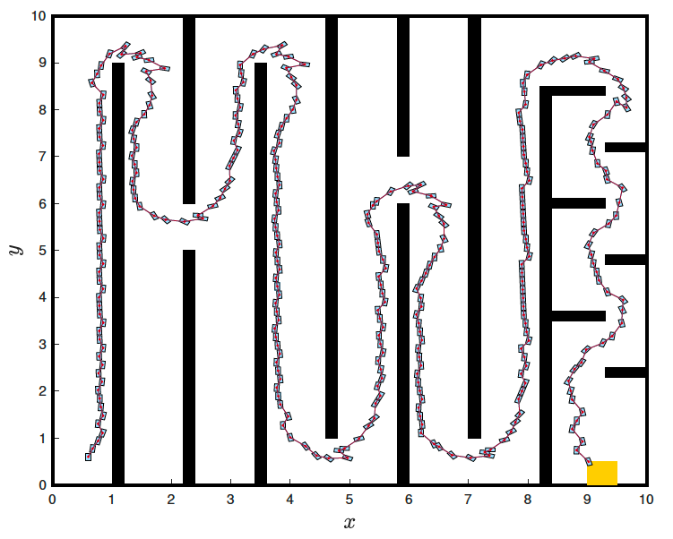
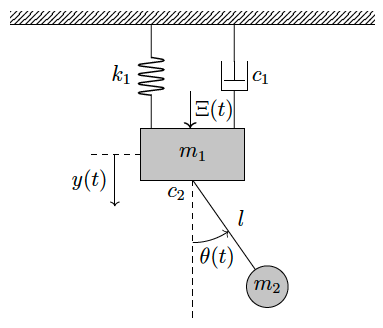

Physics-Informed Construction for Qualitative Autonomy
Safety, stability, reachability, and their combinations are fundamental building blocks for specifying more complex control and verification tasks in nonlinear systems, including those governed by ODEs, SDEs, and hybrid dynamics, as well as systems subject to bounded topological perturbations. These concepts have broad applications in robotics, UAV control, cyber-physical systems, and other safety-critical physical systems.


(Left) navigate to the yellow set while avoiding touching the walls; (right) stabilize the stochastically perturbed block-and-pendulum system.
While formal methods (e.g., via discretization and finite abstractions) provide a systematic approach to system verification and control synthesis, they are typically limited to low-dimensional settings due to the exponential growth of computational cost with dimension—the so-called curse of dimensionality. We therefore seek PDE characterizations (Hamilton–Jacobi-type) of these problems, in which control Lyapunov functions, control barrier functions, and control Lyapunov–barrier functions arise as solutions, together with (not necessarily continuous) feedback laws derived from these value functions. To enable scalability, we develop mesh-free approximation methods and employ formal verification tools to ensure that the resulting solutions satisfy the required certificate conditions.
What is the best degree of regularity that can be guaranteed for a control Lyapunov function (CLF) for globally asymptotically controllable systems? This remains an open question, as raised by Prof. Eduardo D. Sontag. In my view, this question can be interpreted from several key perspectives:
Smooth CLFs (or, equivalently, the existence of continuous feedback laws) are often overly idealized for nonlinear systems. In practice, one must embrace nonsmooth analysis and its interplay with viscosity solutions of Hamilton–Jacobi–Bellman (HJB) equations.
From the perspective of approximating solutions to HJB equations, what is the appropriate notion of convergence? In particular, the metric should ensure not only convergence of the value function, but also the satisfaction of Lyapunov conditions required for control synthesis.
Is a single (possibly nonsmooth) CLF necessary in practice for control synthesis? Not necessarily. While a single CLF provides mathematical elegance and convenience, practical approaches may instead construct piecewise-smooth surrogates and verify their validity using appropriate convergence metrics.
Continuing with (1b) and (1c), how do we address the trade-off between ensuring high accuracy and achieving scalability? In particular, how can we develop physics-informed machine learning approaches to approximate CLFs, CBFs, and CLBFs? Physics-informed neural networks (PINNs) often makes it difficult to achieve high accuracy. Moreover, neural network parameterizations may still require substantial memory and computational cost in high-dimensional settings. Can symbolic regression be leveraged to overcome these limitations and achieve solutions that are both highly accurate and scalable?
How can we address the scalability of formal verification so that the Lyapunov conditions can be certified?
Can we obtain an equivalent construction from a hybrid-systems topology perspective, potentially only of theoretical interest, that offers an alternative perspective on the above approach?
Other related questions not explicitly highlighted here are also open for further discussion.
Physics-Informed Neural Network Lyapunov Functions: PDE Characterization, Learning, and Verification.
J. Liu, Y. Meng, M. Fitzsimmons, R. Zhou.
Automatica, 2025. (DOI)Physics-Informed Extreme Learning Machine Lyapunov Functions.
R. Zhou, M. Fitzsimmons, Y. Meng, J. Liu.
IEEE Control Systems Letters, 2024. (DOI)(TOOL) LyZNet: A Lightweight Python Tool for Learning and Verifying Neural Lyapunov Functions and Regions of Attraction.
J. Liu, Y. Meng, M. Fitzsimmons, R. Zhou.
ACM International Conference on Hybrid Systems: Computation and Control (HSCC). @ Hongkong SAR China, 2024. (DOI)Physics-Informed Neural Network Policy Iteration: Algorithms, Convergence, and Verification.
Y. Meng\(^\star\), R. Zhou\(^\star\), A. Mukherjee, M. Fitzsimmons, C. Song, J. Liu.
International Conference on Machine Learning (ICML). @ Vienna, Austria, 2024. (DOI)Stochastic Lyapunov-Barrier Functions for Robust Probabilistic Reach-Avoid-Stay Specifications.
Y. Meng, J. Liu.
IEEE Transactions on Automatic Control, 2024. (DOI)Lyapunov-Barrier Characterization of Robust Reach-Avoid-Stay Specifications for Hybrid Systems.
Y. Meng, J. Liu.
Nonlinear Analysis: Hybrid Systems, 2023. (DOI)Smooth Converse Lyapunov-Barrier Theorems for Asymptotic Stability wit Safety Constraints and Reach-Avoid-Stay Specifications.
Y. Meng, Y. Li, M. Fitzzsimmons, J. Liu.
Automatica, 2022. (DOI)